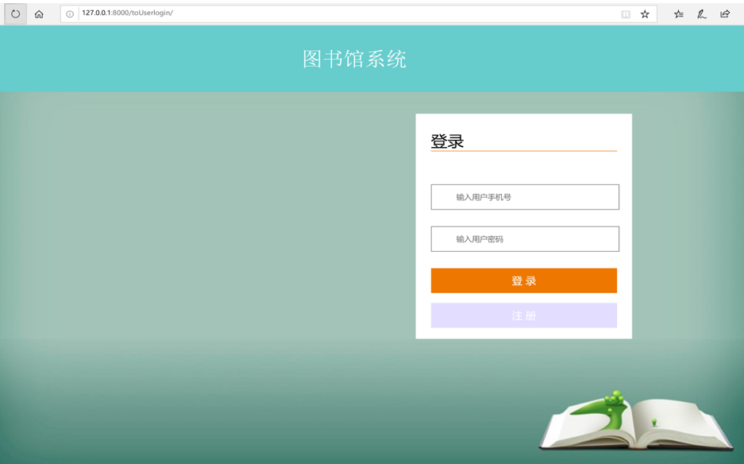

图书馆管理系统
图书馆管理系统是一个为图书馆提供图书管理、借阅登记和归还登记等功能的系统， 旨在方便图书馆管理员对管内图书进行管理。
该系统使用Python的Django框架实现，数据存储使用MySQL数据库， 主要应用到的技术包括Python、HTML、CSS、JavaScript。
后端成员：曹裕、左宁毅、王林茂
前端成员：王思雨、谢朝文
指导老师：张亮敬
1.用户管理
用户管理主要包括“用户新增”、“用户注销”、“用户信息维护”、“用户信息查询”等功能。
这里的用户指的 是用于管理系统的用户，不同的类型的用户应有不同的权限。如系统超级用户可以新增普通用户，
授予普通用户对系统 功能块的使用权限，普通用户可以维护会员的个人信息，积分信息和折扣信息等。
2.图书管理
图书管理主要包括“图书新增”、“图书下架”、“图书信息维护”、“图书信息查询”等功能。
这一部分的功能主要 是由系统管理员操作。
3.借阅管理
对于需要从图书馆借书回去阅读的用户，可以将自己需要借阅的书籍，找系统管理员登记借书，
阅读完毕再将书籍拿到管理员处登记还书。
4.销售管理
如果用户想要购买图书，也可以将自己需要购买的书籍，找系统管理员登记付款，完成图书购买。
1.前端页面还不够美观，后期需要再做调整。
2.许多数据校验都没做，后期会针对数据校验问题进行优化。
3.购买支付功能还没完成，后期再进补充优化。
1.登录页面

2.用户注册
3.图书新增
4.图书借阅
5.图书归还
6.图书选购和购买记录
7.图书借阅记录